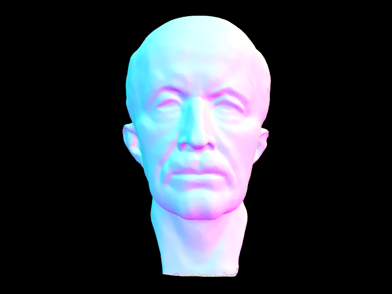
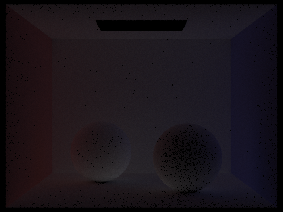
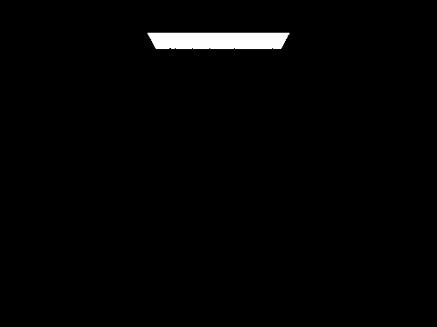
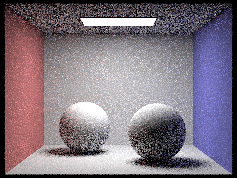

This assignement focusses on ray tracing, and its acceleration. We start off by performing mesh intersection after generating a ray from the
camera through each pixel into the scene. Then we accelerate this process by using Bounding Volume Hierarchies, which makes the intersection
process multiple orders of magnintude faster. The next objective is to perform direct, and then global illumination recursively, and finally
using adaptive sampling to reduce noise.
The link to the GitHub page can be found here.
Part 1: Ray Generation and Intersection
The first function here is used to generate a ray given the normalized image coordinates.
This works by first converting the normalized coordinates to the camera coordinates by shifting
the points such that the center (0.5, 0.5) is now at (0, 0). Then the points are scaled by the
FOV factors for each direction to give us the points in camera space. Here, the origin and the
direction of the ray are calculated as the camera's origin, and the
(cameraspace_xy - cameraspace_origin) respectively. Finally, these are converted to world space
coordinates by applying the c2w rotations, and camera position translations.
The next step is to raytrace a pixel based on num_samples. A random point between [0,0][1,1] is chosen
using the get sample function. The sample is uniform. Because it ranges from 0 - 1, simply adding this
to the pixel coordinates is sufficient to get a random value in that pixel. Now, the xy coordinates
are normalized based on the dimensions of the buffer, and a new ray is generated. The radiance
estimation function is now used to get the approximate global illumination for the ray.
This is repeated many times based on the number of samples desired, and the results are averaged.
We can use a simple average because the range is 1, and the distribution is uniform.
Now come the intersection tests. For the triangle intersection test, I implemented the
Möller–Trumbore algorithm from the lecture notes. The only thing to note here is that
the thresholding of the denominator is done at 0.0000001 (arbitrary), and the barycentric coordinates
are checked for validity as well. The normal is calculated based on the coordinates that the
Möller–Trumbore algorithm outputs. For the sphere intersection test, I also used the algorithm in the
notes that involves solving the quadratic equation. I had to pay attention to return the right time,
based on which point or points passed the min-max test. Another note here is that this part of the
algorithm did not work if the t_max is not updated. These images show the normal shading for a few small
collada files.
|
Figure 1: CBcoil Render
|
 Figure 2: CBSpheres Render
Figure 2: CBSpheres Render
|
|
Figure 3: CBGems Render
|
Figure 4: Banana Render
|
Part 2: Bounding Volume Hierarchy
My BVH algorithm is a recursive algorithm that takes in the start and end iterators for the objects, and
returns the root node. It first checks the end condition: if the number of primitives given to the function are
less than a threshold, it will create a leaf node with all the primitives. Now, if it is not to be a leaf node,
then it must create a left and right node recursively. First, I calculate the size of the current bbox. Then I
create a node for the current recursion step. For the left and right, we must manually split the vector of primitives.
To do this, I chose the heuristic as follows: First get the longest axis for the current bbox. Then, get the centroid
of the object that is the median along that axis. Then finally partition the array based on this centroid, along the
longest axis. I tried simply picking the center of the longest axis, and picking the centroid, and the latter worked
much better because it resulted in a much more even split of the objects.
Here are a few images that could not be rendered without the BVH acceleration, rendered using BVH on a hive machine.
Command parameters used: "-t 8 -r 800 600 -s 16"
|
Figure 5: CBdragon.dae
|
Figure 6: CBlucy.dae
|
|

Figure 7: maxplanck.dae
|
Figure 8: peter.dae
|
|
Figure 7: beast.dae
|
 Figure 10: wall-e.dae
Figure 10: wall-e.dae
|
Using the flags "-t 8 -r 800 600", I rendered a series of figures with and without
using BVH acceleration, as shown in the table below. These renderings were done on a hive
machine. After measuring the rendering times, I plotted the percentage speedup of the algorithm
below. The formula for speed up was (old_time - new_time)/new_time * 100. Note that the speedup
percentage values are in the 10000+% range. There is an obvious speedup in the algorithms that
is dependent on the number of primitives. The outlier in the figure is maxplanck. This is most
likely because of the high concentration of the primitives in one area, that is why the rays
still pass through a lot of the bounding boxes. A better splitting heuristic would most likely
fix this issue as well. Using the % change of the time complexities, instead of raw time values,
we get the formula (n - log(n))/log(n), which is a function of the number of primitives n.
On plotting this from 1000 to 60,000 (the range of primitives that we have) we can see that the
plot is almost exactly a straight line. This is consistent with the results that are shown in the
plot that I generated below (minus the outlier). This accurately demonstrates the theoretical speedup
in my algorithm in practice.
| Figure Name |
Num. Primitives |
Render Time: Normal (s) |
Render Time: BVH (s) |
| sky/bunny.dae |
33696 |
82.7554 |
0.117 |
| meshedit/teapot.dae |
2464 |
8.9158 |
0.0941 |
| meshedit/cow.dae |
5856 |
18.3182 |
0.1117 |
| sky/beetle.dae |
7558 |
13.5516 |
0.0754 |
| keenan/building.dae |
39506 |
38.7973 |
0.0466 |
| meshedit/maxplanck.dae |
50801 |
182.0791 |
0.1497 |
|
Figure 11: Speed Up using BVH Acceleration
|
Part 3: Direct Illumination
For direct lighting, the task is to trace ray from the camera to an object and bounce it from that object to another.
The inputs to the function is the ray from the camera, and we need to sample the second ray which is done in 2 ways:
hemisphere sampling, and importance sampling. In both implementations, I use Monte Carlo integration
to get the value of the integral of the light falling at that point. For this I generate many rays at random from the
point where the initial ray hits the object. This is done by using the uniform hemisphere sampler in the first function,
and the sample_L function for the lights in the second. For both, the probabilities of generating that ray are returned
by these functions. The random outgoing direction must be in terms of the world coordinates for the ray itself. I create
a ray object using this value and then check if this intersects any other obejct. If so, then I get the emmision of that
object, and add it to the total intensity using the brdf of the object, the lamberts law cosine term, and the monte carlo
integration formula that requires the pdf. The difference between the 2 functions is that in the importance sampling functions,
I iterate over each light, and the get only those directions that directly intersect the lights.
Here are some images using both types of sampling with the flags "-t 16 -s 4 -l 16 -r 480 360". We can easily notice the
difference in noise between the 2 algorithms, given the same number of samples per pixel. The importance sampling algorithm
looks much better even with a small number of samples per pixel. This is because in hemisphere sampling, the ray has a much
smaller chance of hitting the light. In technical terms, we are sampling those areas of the lighting function that dont
contribute much to the actual integral. So unless the number of samples is large enough to consistently sample the light,
hemisphere sampling will have a lot of noise. In the importance sampling images, the variance of color (noise) is much less
because each ray will always intersect the light at some point, except for those that intersect a closer object, hence forming
a shadow ray. Now, we are consistently sampling the intensity at important locations in the function, and therefore, the integral
is much more accurate.
|
Figure 12: Spheres using uniform sampling
|
Figure 13: Spheres using importance sampling
|
|
Figure 14: Bunny using uniform sampling
|
Figure 15: Bunny using importance sampling
|
The images below are using the sample rate per pixel of 1, and varying the number of samples per light from
1 to 64. For 1 sample per light, we can see that the image is very noisy. This is because the light either
gets occluded or not. As the number
of light samples increases, there are more values to average from in the monte carlo integration process, and
its value gets closer to the actual integral. Thus, the shadows get softer, and more uniform, and the noise
decreases. Notice the white sheen on the walls for the low number of samples. This is because the rays are only being
sampled directly from the light.
|
Figure 16: 1 sample per light
|
 Figure 17: 4 samples per light
Figure 17: 4 samples per light
|
|
Figure 18: 16 sample per light
|
Figure 19: 64 samples per light
|
Part 4: Global Illumination
The indirect lighting function is based on the same concept as the one bounce function, with the only exception that it is recursive.
We take the incoming ray, and calculate another ray originating from the intersection of the ray with the current object.
This new ray is then cast into the scene and then its intersection is calculateed. If it intersects, then the same function is called recursively
for that ray. The return value is then used in the monte carlo estimate for the lighting, and then returned. The stop condition is based on the
number of bounces that the ray has been through, or using russian roulette. Here are some images generated using global illumination (-s 1024 -l 4 -m 5):
|
Figure 20: CBbunny render
|
Figure 21: CBspheres render
|
|
Figure 22: Dragon render
|
Figure 23: Blob render
|
Here is one scene with only direct illumination, and then only indirect illumination, for
different levels of bounces. The general trend is that the image becomes dimmer because of
the repeated applications of the brdf. We also see the colors of the wall on the side of the
spheres as the number of bounces of light increases. The change to the code to produce these
images was done by only counting the one_bounce_radiance when the ray reached a depth of 1.
This way, the only light in the image was produced at a depth of 1, and then bounced all the way back
to the camera.
|
Figure 24: CBspheres with m = 0 (only direct)
|
Figure 25: CBspheres with m = 1 (only direct)
|
 Figure 26: CBspheres with m = 2 (only indirect)
Figure 26: CBspheres with m = 2 (only indirect)
|
Figure 27: CBspheres with m = 3 (only indirect)
|
|

Figure 28: CBspheres with m = 4 (only indirect)
|
Figure 29: CBspheres with m = 5 (only indirect)
|
Here is CBbunny, rendered with varying max_ray_depths = 0, 1, 2, 3, 100, and 1024 samples per pixel.
We can see that the we first only see the light, then as the num bounces increases, the ceiling becomes
brighter, and the reflection of the walls can be seen on the bunny.
|

Figure 30: CBbunny with m = 0
|
Figure 31: CBbunny with m = 1
|
|
Figure 32: CBbunny with m = 2
|
Figure 33: CBbunny with m = 3
|
|
Figure 34: CBbunny with m = 100
|
Here is CBbunny, rendered with varying samples per pixel = 1, 2, 4, 8, 16, 64, 1024. Here, the noise in the image
goes down, as the monte carlo integral over the image is closer to the real value.
|
Figure 35: Spheres with s = 1
|

Figure 36: Spheres with s = 2
|
|
Figure 37: Spheres with s = 4
|
Figure 38: Spheres with s = 8
|
|
Figure 39: Spheres with s = 16
|
Figure 40: Spheres with s = 64
|
 Figure 41: Spheres with s = 1024
Figure 41: Spheres with s = 1024
|
Part 5: Adaptive Sampling
The implementation of adaptive sampling consists of calculating the mean and the variance at a certain interval.
The next step is to check the convergence factor, and if it is below a certain threshhold, then we break the loop.
Here is the CBspheres render using adaptive sampling, as well as the samples rates.
|
Figure 42: CBspheres with adaptive sampling
|
Figure 43: CBspheres rate image
|